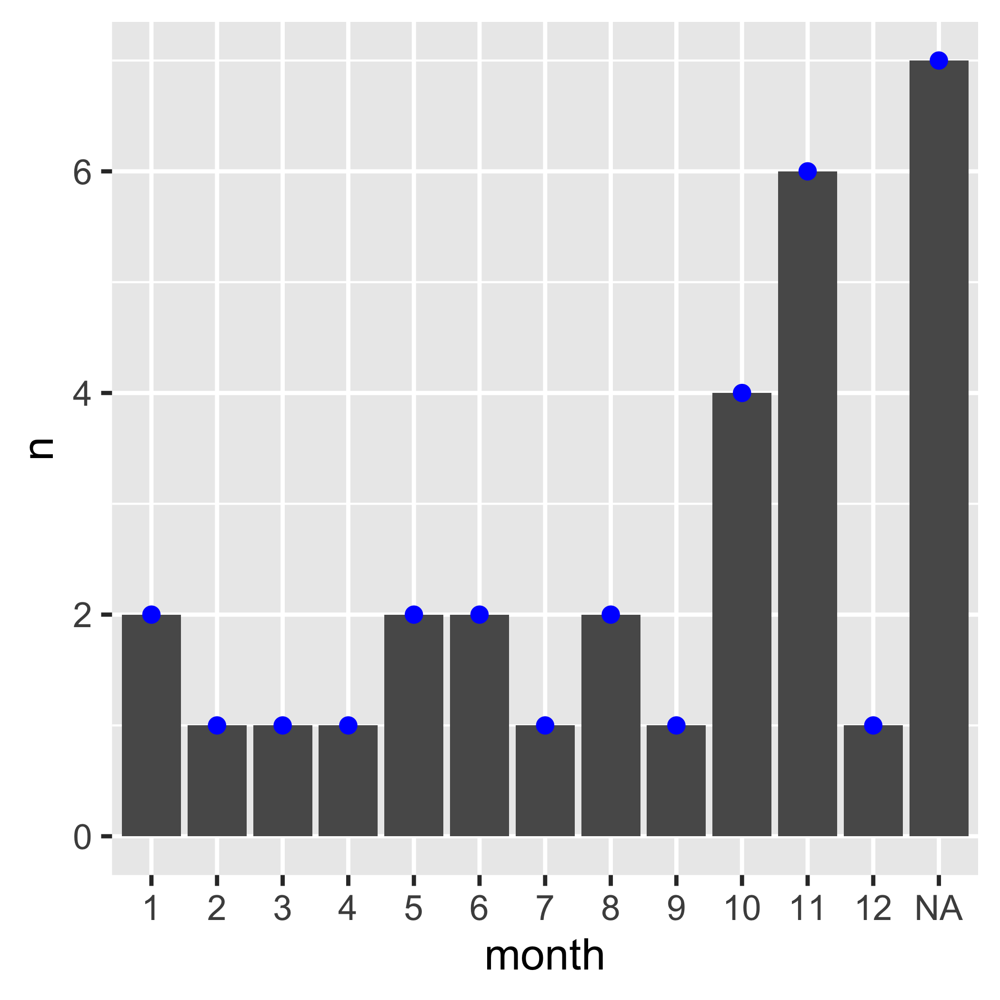
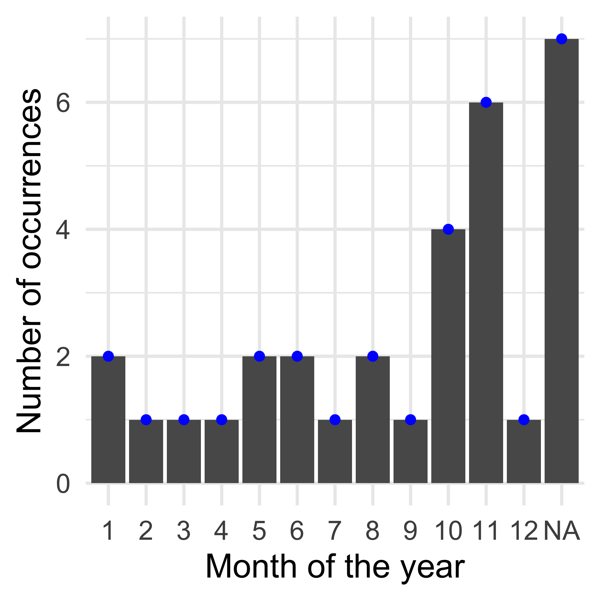
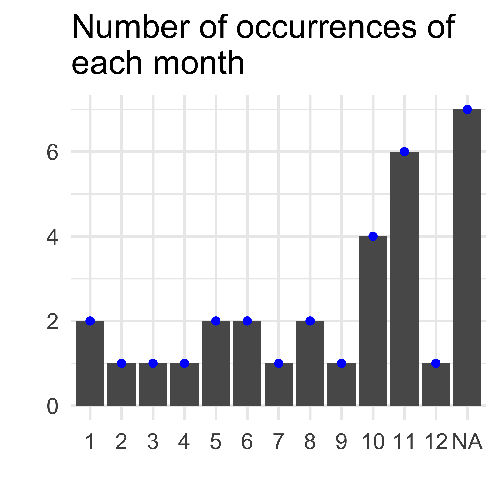
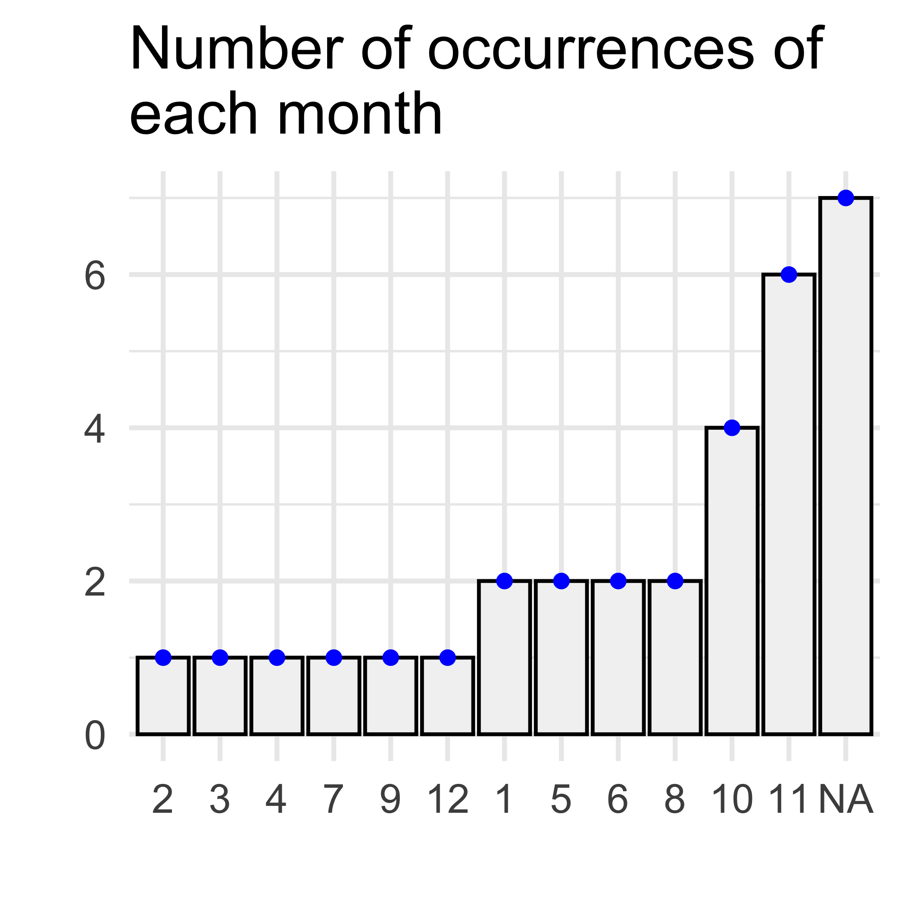
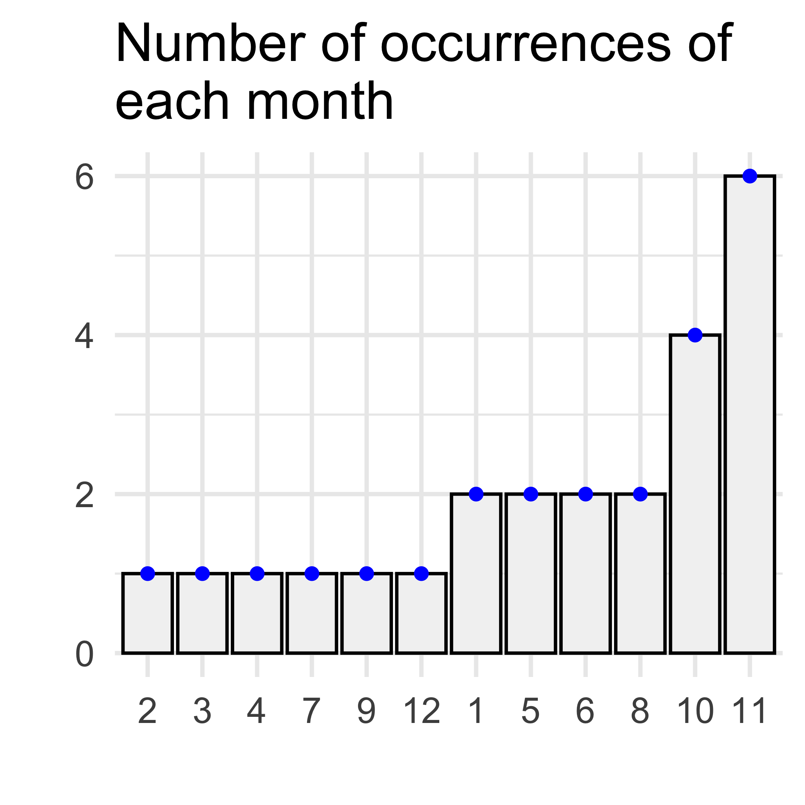
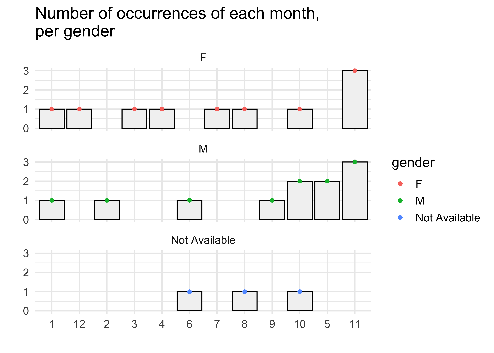

5 Plotting data with ggplot2
After preparing the data, we can start creating some plots to actually
extract some information from it (or find even more things to be fixed).
The ggplot2 package is based on The Grammar of Graphics, and provides
us with the tools to create whatever graph we need.
As defined by the creator of the package, Hadley Wickham, a plot is composed by 4 things:
- Layers: data, aesthetics (aes), geometric objects (geom), transformations, etc
- Scales
- Coordinates
- Facets
So the ggplot2 syntax creates plots by especifically using a
combination of these 4 elements. This might not make much sense now
but it is actually quite easy to understand. For instance, we can
create a barplot of the month count we saw above with:
count_month <- pt %>%
count(month) %>%
mutate(month = as.factor(month))
p <- count_month %>%
# In the aes() function we map the variables from the data
# into the x, y and other dimensions of the plot
ggplot(aes(x = month, y = n)) +
# The geom_ layers define what type of graphic we want
geom_bar(stat = "identity") +
# The geom_ can be accumulated, by simply adding more layers to the
# plot
geom_point(colour = "blue")
p 
How can we make this nicer? Maybe changing colours, labels and other details:
p +
# Adding the variable labelling
labs(x = "Month of the year", y = "Number of occurrences") +
# Using a built-in theme with font size 14
theme_minimal(14)
Or we can just suppress all the labs by an informative title:
p +
geom_point(colour = "blue") +
labs(title = "Number of occurrences of \neach month",
x = "", y = "") +
theme_minimal(14)
Can we change the order of the bars? (but note that it won’t be in the month order anymore!)
p <- count_month %>%
mutate(month = as.factor(month)) %>%
# In the aes() function we map the variables from the data
# into the x, y and other dimensions of the plot
ggplot(aes(x = reorder(month, n), y = n)) +
# The geom_ layers define what type of graphic we want
geom_bar(stat = "identity", colour = "black", fill = "grey95") +
# The geom_ can be accumulated, by simply adding more layers to the
# plot
geom_point(colour = "blue") +
labs(title = "Number of occurrences of \neach month",
x = "", y = "") +
theme_minimal(14)
p
The NA class is the most frequent one, but we don’t know what it means. We can just remove it, for example:
p <- count_month %>%
mutate(month = as.factor(month)) %>%
na.omit() %>%
# In the aes() function we map the variables from the data
# into the x, y and other dimensions of the plot
ggplot(aes(x = reorder(month, n), y = n)) +
# The geom_ layers define what type of graphic we want
geom_bar(stat = "identity", colour = "black", fill = "grey95") +
# The geom_ can be accumulated, by simply adding more layers to the
# plot
geom_point(colour = "blue") +
labs(title = "Number of occurrences of \neach month",
x = "", y = "") +
theme_minimal(14)
p
Could we make the same plot per gender?
count_month_gender <- pt %>%
group_by(gender) %>%
count(month) %>%
mutate(month = as.factor(month)) %>%
na.omit()
p <- count_month_gender %>%
# In the aes() function we map the variables from the data
# into the x, y and other dimensions of the plot
ggplot(aes(x = reorder(month, n), y = n)) +
# The geom_ layers define what type of graphic we want
geom_bar(stat = "identity", colour = "black", fill = "grey95") +
# The geom_ can be accumulated, by simply adding more layers to the
# plot
facet_wrap(~gender, ncol = 1) +
geom_point(aes(colour = gender)) +
labs(title = "Number of occurrences of each month, \nper gender",
x = "", y = "") +
theme_minimal(14)
p 
–> Exercises: https://r4ds.had.co.nz/data-visualisation.html#exercises